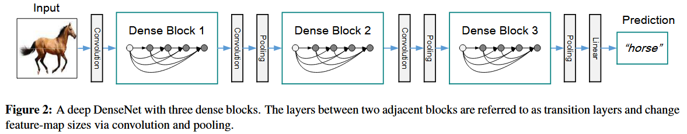

论文笔记 - Densely Connected Convolutional Networks
1. Information
Title: Densely Connected Convolutional
Networks
Link: DenseNet
Paper
Source: IEEE Conference on Computer Vision and Pattern
Recognition (CVPR)
Date: 2017
2. Summary
本文提出了 DenseNet，一种新的深度学习架构，在该架构中，每一层都接收来自所有前面层的输入，形成密集的连接。与传统的卷积神经网络只传递前一层的信息不同，DenseNet 为每一层创建了来自所有前一层的直接连接。该设计显著改善了梯度流动并促进了特征重用，从而实现了更高效的网络，并且参数更少。
3. Background
DenseNet 基于传统 CNN 架构，解决了梯度消失和参数冗余等关键问题。密集连接的概念受到残差网络（ResNet）成功的启发，但DenseNet 通过完全连接每一层的方式进行了更为激进的改进。这项研究在深度学习领域具有重要意义，特别是在提高图像分类、物体检测等任务的网络效率和性能方面。
4. Research Objective
本研究的主要目标是提出并验证 DenseNet 作为一种更高效的深度学习架构，旨在缓解传统 CNN 中梯度消失和特征冗余的问题。研究旨在展示 DenseNet 在准确性和参数效率方面相较于传统架构的优势。
5. Method
DenseNet 架构由多个层块组成，层块内的每一层都与之前的所有层进行连接，如下图所示：

在每个层块内，特征图的大小保持不变，而层块之间通过过渡层实现特征图的下采样。
DenseNet 的显著特点之一是每一层的输出特征图维度非常窄，输出通道数被称为增长率 \(k\)。虽然每层的输出维度固定为 \(k\)，但输入特征图的维度随着网络深度的增加而逐步增多。为提升计算效率，DenseNet 在每个 3×3 卷积之前引入 1×1 卷积作为瓶颈层，以减少输入特征图的数量。
此外，通过在过渡层引入压缩因子 \(\theta\)，进一步提升了模型的紧凑性，使 DenseNet 更高效地利用计算资源。
6. Evaluation
作者使用标准数据集（如 CIFAR-10、CIFAR-100 和 ImageNet）对 DenseNet 进行了评估，结果表明 DenseNet 在准确性和参数数量方面都显著优于传统 CNN，显示出更强的泛化能力。通过广泛的消融研究，分析了密集连接对性能的影响。
7. Conclusion
DenseNet 通过引入密集层连接，提供了一种有效的解决方案，提升了深度神经网络的效率。这一创新使得网络训练更快、准确性更高，同时参数更少。研究表明，DenseNet 可以成为处理大数据集和深度学习任务中的一个有价值的架构。